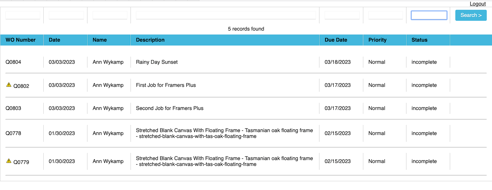
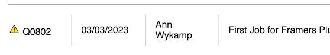
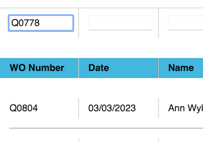
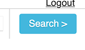
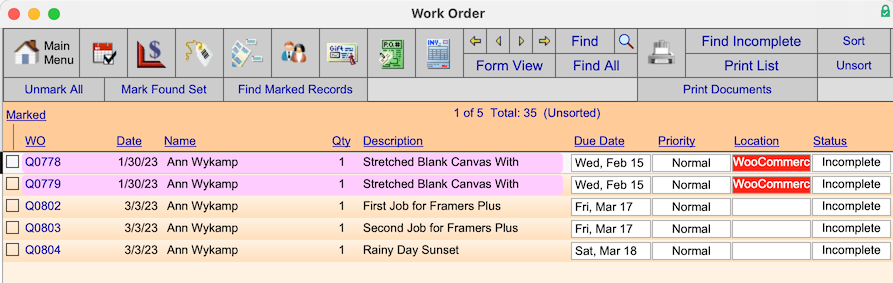
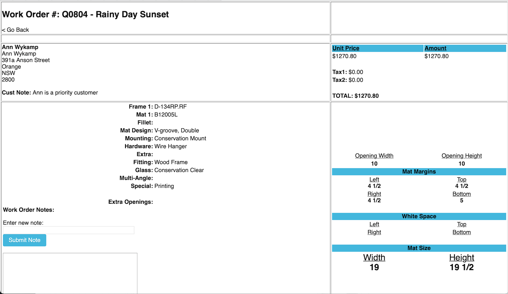
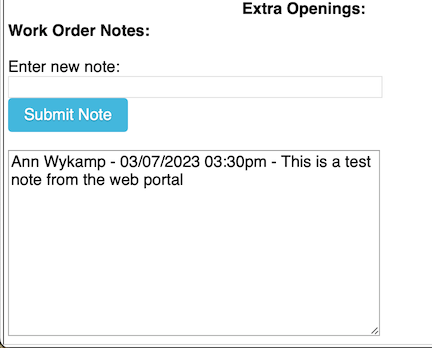
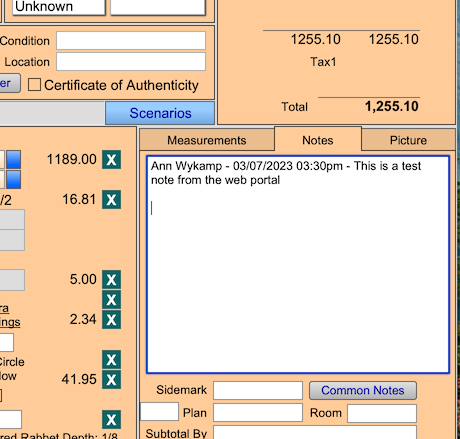
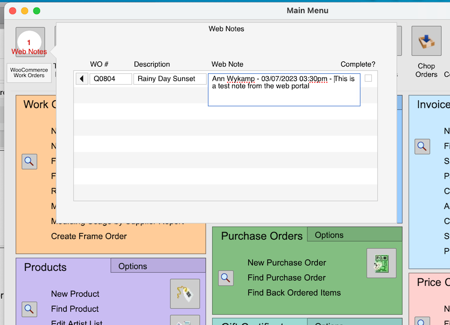

Web Portal
Web Portal Work Orders
Web Portal Work Orders - List View
-
After the customer has clicked the Work Orders button, a list view appears showing all of their current Work Orders in production in FrameReady that are not marked as “Complete”.

-
The yellow icon (left of a Work Order number with an exclamation point) means that the Work Order has a new note that has been left by someone in FrameReady. This will alert the customer about new communication on the Work Order: letting them know that someone in production has left a new communication point for them to check. Once the customer clicks into the particular Work Order, the yellow exclamation icon is removed as being viewed.

-
At the top of the list view, above each field title, is a blank field that customers can click into and enter search criteria to search and narrow down the list view of Work Orders. This is particularly handy in situations where the customer has a very long list of Work Orders and they need to find a narrow set of them quickly without scrolling around. Click the blue Search button (on the far right of the Work Orders screen after you have entered your criteria) to narrow down the List View.



Web Portal Work Orders - Detail View
-
After the customer clicks the Work Order number in List View, the Detail View for that Work Order appears.

-
On the Work Order detail view are:
-
the name of the Work Order,
-
the WO Number,
-
the price,
-
taxes,
-
and all of the details including the frames, mats, options, opening sizes, mat sizes etc..
-
-
At the bottom left corner is a field for the Work Order Notes. This is where the Work Order notes appear when a FrameReady production has left a note on a Work Order for a customer that triggers the yellow exclamation alert. This is also where the customer can leave a communication note for the FrameReady production from the Web Portal.
-
The customer can enter their note into the Enter new note field and then click the Submit Note button. This will submit the note to that FrameReady Work Order along with a timestamp of what date and time that note was left by the logged in customer on the Web Portal.

-
After a new note has been submitted, it appears in the Work Order Notes field on the Work Order in FrameReady.

-
A visual alert is also generated for the FrameReady user and can be found on the Main Menu in FrameReady.

-
The alert is also connected with Multi Site in FrameReady, to where, if the Work Order is a Work Order that is connected to Multi Site number #2, it will only show an alert when someone from Multi Site #2 is logged in in FrameReady.
-
The FrameReady user can clear the alert from the alert pop up menu by clicking on the “Complete” checkbox to the far right of the alert pop up record after they have read the Work Order communication note from the customer.
© 2023 Adatasol, Inc.